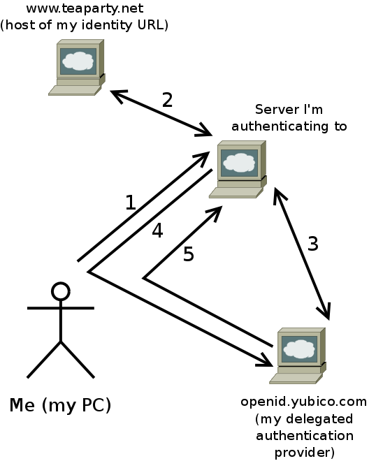

OpenID for authentication
I've just registered on "yet another web site", which meant another scramble for a username that's not already in use, another randomly-generated and highly-unmemorable password, and another email address provided for account recovery in the event that it all goes wrong. Along with my flying car and jetpack, I'd rather hoped the 21st century would bring a better way of managing my identity on the internet; in 2005 it did just that with the release of the OpenID standard for distributed authentication. Sadly, OpenID has remained a fringe player in this field.
How it doesn't work now
We've all experienced this registration pain: the multiple permutations of our preferred username, trying to find a variant that we can remember which no-one has already taken, and the generation of yet another nonce password, which our browser will have to remember for us. Need I mention the issues of either re-entering that password for storage on other browsers we use, or the use of some centralized storage system that's either local to a trusted device whose loss will be a near-disaster, or is stored in someone else's cloud, with all the trust issues that involves? They also want an email address for recovery. Do I use my regular one, and risk them losing control of it, or even simply selling it to spammers? Or do I generate a one-time one, which my mail server then has to be configured to know about?In any case, isn't username/password authentication a bit stale? Most banking web sites now require some variant of two-factor authentication (2FA); it's time this became standard practice. But if every site rolls its own 2FA, then my storage-of-random-credentials problem just got even bigger. The right way forward for most web sites is federated authentication: the site delegates the business of ensuring that I'm really me to some generally available third-party. This is now starting to happen, but unfortunately the two big players are Google and Facebook, and you don't have to wear a tinfoil hat not to want to give them information about every single web site you ever use.
Things can be better
Fortunately, in 2005, OpenID was created. This is a distributed authentication system that, in its simplest form, ties my identity to a URL of my choice. That URL uses some link tags in the header to nominate my OpenID authentication provider of choice. You can see this in the top of my OpenID identity URL, https://www.teaparty.net/:
<html>
<head>
<link rel="openid.server" href="https://openid.yubico.com/server.php" />
<link rel="openid.delegate" href="https://openid.yubico.com/server.php/idpage?user=vvgdbhcgutti" />
</head>
<body>
Regular web page stuff...
</body>
</html>
The links specify to whom I delegate the business of authenticating me
(openid.server), and how I identify myself to them
(openid.delegate). Note that these are not set in stone;
indeed, they're downright disposable. If my current delegate goes out
of business, I lose trust in their ability to handle this securely
and reliably, or I just forget how I authenticate to them and I can't
raise their customer service department, thirty seconds with vi
(or three minutes with emacs) can put a new delegate in place.
In fact, when one provider did fail, that's exactly what happened: I used Google to find OpenID providers, picked one I liked, registered with it, and changed my delegation links. If I were feeling particularly paranoid and wanted to run my own authentication provider, I could, but even if I choose not to, authentication stays very much in my control because of my ability to re-delegate with the touch of a text editor.
So when I approach an OpenID-capable web site to log in, things unfold as the diagram shows.

- I go to the web site, and tell it I want to log in as my identity URL, https://www.teaparty.net/.
- The web site retrieves https://www.teaparty.net/ from my webserver and parses those tags.
- The web site contacts openid.yubico.com and POSTs a request to establish a shared secret using Diffie-Hellman key exchange (the protocol calls this "associating").
- The web site sends my web browser off to openid.yubico.com to authenticate, as I specified in the delegate tag, using our pre-agreed method. The web site provides a nonce as part of this exchange.
- Provided that I authenticate to its satisfaction, openid.yubico.com sends my browser back to the web site with a token that is provably from that provider, and which is intended for the web site as part of this particular authentication exchange. This is possible because of the shared secret set up in step three, and the nonce provided in step four.
Doing OpenID well requires a little diligence:
- Ensure that your identity URL is served under HTTPS, with a properly-signed certificate, from a domain secured with DNSSEC. You can't force any given web site to check certificates and DNS signatures, but providing them makes life harder for attackers. It used to be expensive and painful to do these things, but between Let's Encrypt and the fairly widespread availability of DNSSEC, it's no longer either of those.
- Your delegated authentication provider knows which web site is asking you to authenticate through it, and it should provide this information to you in step four. Make sure you check that it matches the web site you think you're authenticating to.
- As you may have guessed from the URLs above, I use one of the slots on my YubiKey for one-time password authentication. Whatever you plump for, use something more robust than simple username/password authentication with your delegated authentication provider.
The OpenID protocol has also had some security issues. These have generally turned out to be implementation-dependent (and fixed by the implementation's authors) or can be sidestepped by the use of SSL/TLS throughout the authentication chain.
How's that working out?
Wikipedia claims that "there are over 1 billion OpenID enabled accounts on the Internet [...] and approximately 1,100,934 sites have integrated OpenID consumer support". Unfortunately, with the honorable exception of ServerFault, few of the sites I find myself logging into are in that 1,100,934. One reason for this does not reflect well on big web sites: when you go through the business of registering with a big site, they can ask you for all sorts of biographical information. You don't have to give it to them, but many people will without thinking about it, and this allows the big sites to target advertising more effectively, and thus make more money. If all they get is a naked URL, they know nothing about you; there is thus a considerable incentive to make you go through the pain of registration. It is true that Google and Facebook logins are becoming more commonly available, but as Facebook makes clear, it will provide data to any web site that uses Facebook as a federated authentication provider:
OpenID has been extended, with a newer version of the protocol, to OpenID Connect.
This new version allows a web site not merely to authenticate the user
but also "to obtain basic profile information about the end-user in
an interoperable and REST-like manner
". One might be forgiven for
suspecting this was to help OpenID gain support with the big web site
brigade by addressing the concerns above, but it need not affect us.
The authentication provider cannot provide information it does not have; if
you suspect that it's trying to acquire it, you can, again, always
run your own authentication provider.
Some web sites shouldn't support OpenID, or indeed any distributed authentication scheme at all, because the actions that an authenticated user can perform are too significant to risk any unnecessary failures in the authentication chain. Bank web sites obviously come into this category, but, arguably, interactions with government (e.g. online tax return filing) do as well. However, excepting those, I would like every web site that uses accounts to support OpenID, and I'd settle for a few more every day. If you're putting up a project site, please consider looking around for an OpenID plugin for your site code, and enabling it.
Recently, Joseph Graham posted to the FSFE Fellowship mailing list, saying he'd created a small FluxBB site, https://www.freesoftwareuk.org.uk/, for free-software enthusiasts to chew the fat, arrange pub meets, and so on. I immediately asked him to add OpenID support, which he did. By his own account, he found a plugin with a little searching; installing it was a matter of downloading a ZIP file, putting it where the forum's software could find it, and enabling it via the forum administrative interface. It is true that the plugin has some shortcomings, and he intends to find a better alternative, or write his own, shortly, but getting off on the right foot was not particularly painful.
If you're of a mind to add it to your WordPress site, there is a plugin that
permits authentication via OpenID both for commenters, and for login to
the main site; installation instructions are linked from the above page, and
do not look onerous. Drupal really seems to have gotten the idea; the project notes
that "users can create Drupal accounts using their OpenID. This lowers
the barrier to registration, which is good for the site, and offers
convenience and security to the users
". Drupal
decided to burn the candle at both ends, by supporting OpenID not only
as a client, to allow authentication
to a Drupal instance via OpenID
but also as a
provider, in order to use a Drupal installation as a delegated
authentication provider.
The OpenID project maintains a collection of libraries and
developer tools, including Apache and PHP modules to allow sites to
permit users to authenticate via OpenID, and implementations of
authentication servers to run a delegated
authentication provider. With this many options, it's
surprisingly simple to use OpenID for authentication, and not much harder
to support it. While 2017 is unlikely to bring me a flying car or a
jetpack, with a little help from the internet it might yet bring me
distributed, decentralized identity management.
| Index entries for this article | |
|---|---|
| Security | Authentication |
| Security | Identity management |
| GuestArticles | Yates, Tom |
Posted Dec 8, 2016 1:28 UTC (Thu)
by philipsbd (subscriber, #33789)
[Link] (3 responses)
It is great to see more OpenID Connect content. However, I think you must point out that OpenID is almost completely dead and OpenID Connect (OIDC) is getting used everywhere. And OIDC is essentially an extension of OAUTH 2.0. How does OIDC differ from OAUTH 2.0? When we started developing Dex we lovingly referred to OpenID as "OAUTH 2.0 with types". See this article on OAuth vs SAML vs OpenID Connect for more details on this stuff. At CoreOS we have now built API servers, command line tools, and web apps using OpenID Connect and are happy with its development in Open Source and third-party services as well. Overall, from integrating OpenID Connect into our products, enabling Kubernetes to use OpenID Connect Providers, and building both an OpenID Connect provider and clients we are pretty happy with the choice we made. My only complaint is the name of OpenID Connect is simply confusing.
Posted Dec 8, 2016 9:26 UTC (Thu)
by miquels (guest, #59247)
[Link] (2 responses)
Mike.
Posted Dec 8, 2016 15:41 UTC (Thu)
by philipsbd (subscriber, #33789)
[Link] (1 responses)
Posted Dec 10, 2016 10:29 UTC (Sat)
by chirlu (guest, #89906)
[Link]
Posted Dec 8, 2016 3:00 UTC (Thu)
by joey (guest, #328)
[Link] (2 responses)
Openid was a pretty big deal, and it seemed to be getting lots of momentum for a while. It was interesting to watch how the major players embraced and extinguished it. Their play was to start providing an openid server conveniently tied with their own account system, but neglect to let openid be used to log into any of their services. Since everyone has an account on the big sites, this stifled development of free openid servers, and it relegated most other openid servers to niche areas. Openid login UI tended to special case logins via the major players, to make it easier for their masses of users to log in. Then of course, they retired their openid servers, which was easy for them to do at a strategic moment, because none of their services accepted openid logins.
It seems that the only distributed login method not vulnerable to that kind of attack is logging in with an email address (by clicking on an emailed link). Or at least, the path to do that to email is a longer one given its wide use.
Posted Dec 8, 2016 20:52 UTC (Thu)
by davidstrauss (subscriber, #85867)
[Link]
Posted Dec 8, 2016 23:16 UTC (Thu)
by spwhitton (subscriber, #71678)
[Link]
Posted Dec 8, 2016 15:38 UTC (Thu)
by cesarb (subscriber, #6266)
[Link] (1 responses)
The other side of the coin is that, when said third-party decides to not authenticate you anymore, you lose your account in these web sites. Having a single account be the key to everything can be a large risk. For a recent example: changing the display name for a profile on an ebook reader led to an Amazon seller account being suspended (https://news.ycombinator.com/item?id=13121807); this wouldn't have happened if the accounts were separate.
Posted Dec 8, 2016 20:39 UTC (Thu)
by isilmendil (guest, #80522)
[Link]
E.g. you can make your handle "example.com/users/me" and make that a delegate to your provider "evil.corp/henchmen/minime". If evil.corp shuts down its OpenID server or refuses to continue business with you, you simply change the delegate to another OpenID provider.
What's more: many services allow you to connect more than one id to your account, thus allowing you to have a fall-back.
Posted Dec 12, 2016 12:46 UTC (Mon)
by canatella (subscriber, #6745)
[Link]
OpenID for authentication
OpenID for authentication
OpenID for authentication
OpenID for authentication
OpenID for authentication
OpenID for authentication
OpenID for authentication
OpenID for authentication
OpenID for authentication
Password manager